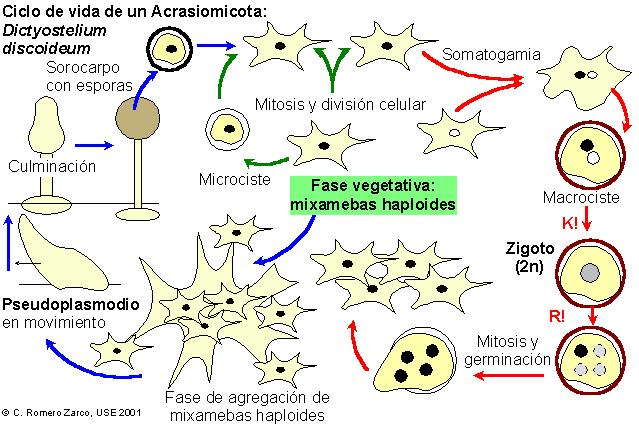
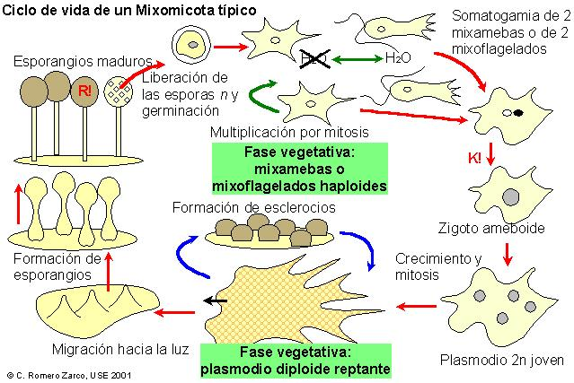
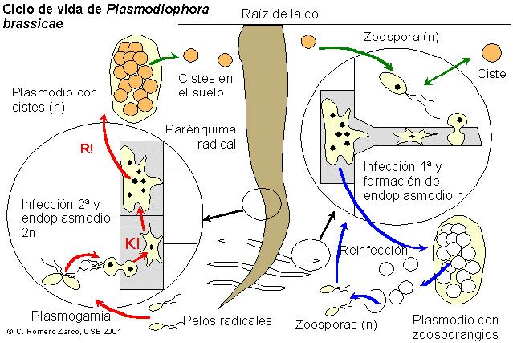
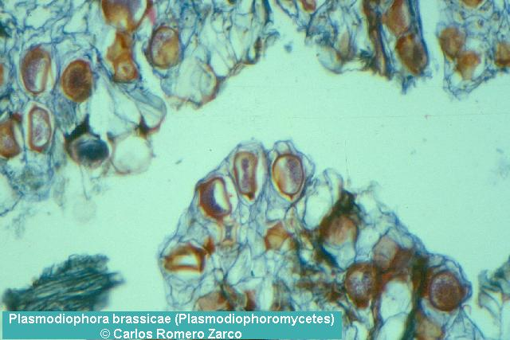

| Caracteres: | Acrasiomicotas | Mixomicotas | Plasmodioforomicotas |
| Modo de vida | Fagotrofos (de bacterias) | Parásitos endocelulares estrictos | |
| Fase asimiladora | mixamebas (n) | mixamebas (n) mixoflagelados (n) plasmodio (2n) |
plasmodios endocelulares (n y 2n) |
| Fase reproductora | pseudoplasmodio (n) => sorocarpo | plasmodio (2n) => esporóforo | endoplasmodios esporógenos (n) y quistógenos (2n) |
| Ciclo biológico | haplofásico, con meiosis zigótica | haplodiplofásico; meiosis esporangial | |
3.- Ciclos biológicos



